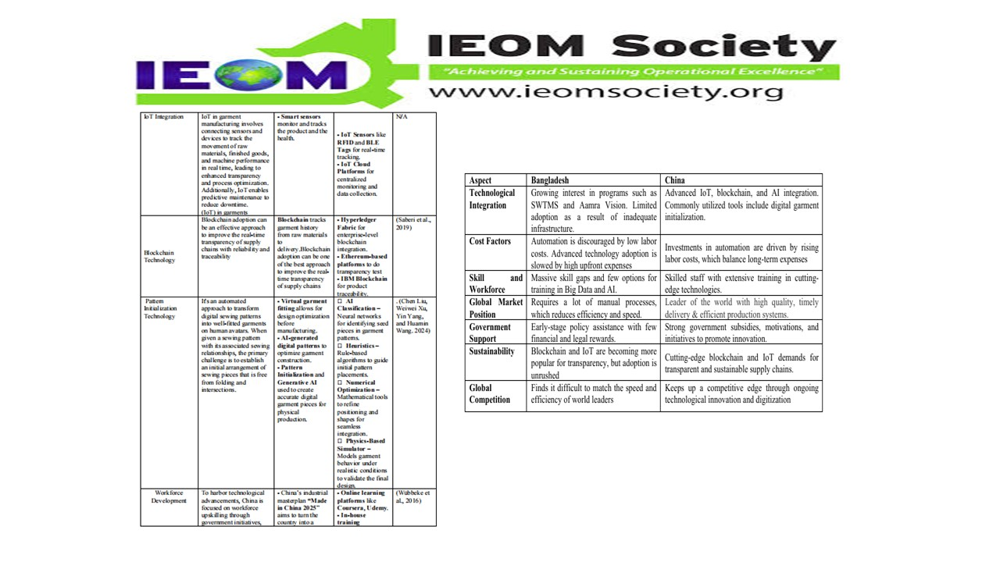
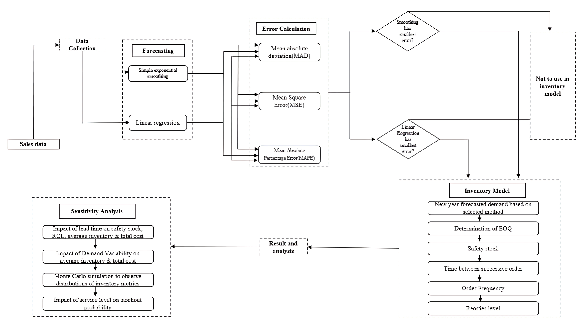
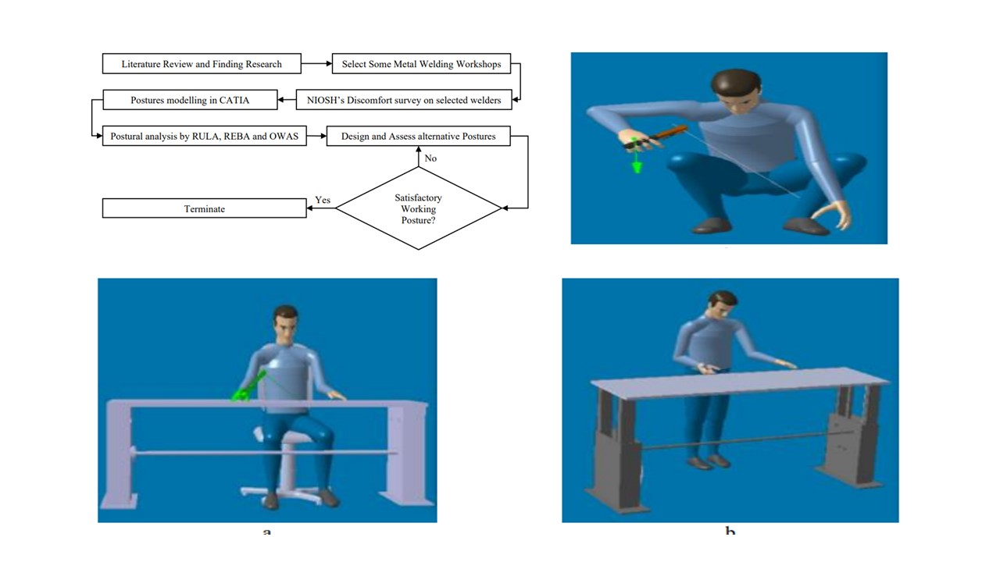
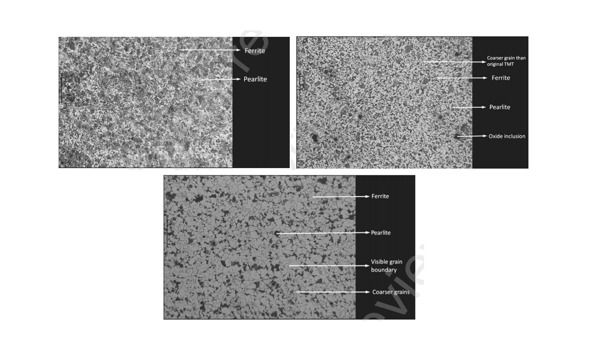
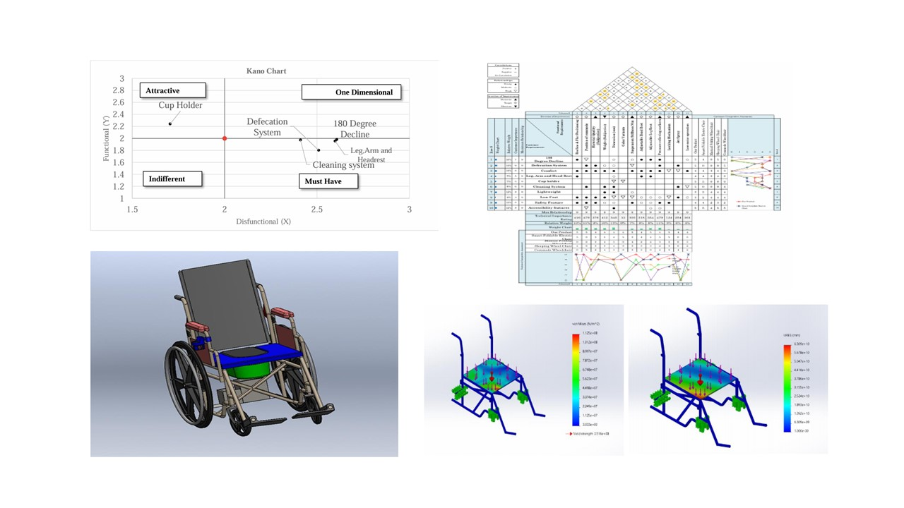

Publications
Publications by categories in reversed chronological order.
An up-to-date list is available on Google Scholar.
* denotes equal contribution
2025

Harnessing Big Data and AI for Supply Chain Resilience in the Garments Industry
The Readymade Garments Industry of Bangladesh contributes about 80% of the export earnings and is currently positioned 2nd worldwide in exporting clothes and fabric industry. The competition within this industry is intensifying rapidly. In addition to fierce global competition labor union movements and higher-quality market demands are making it more challenging for brands to maintain their foothold. This study introduces strategies that may improve the resiliency of the supply chain in Bangladesh's Garments using AI and Big Data tools. About 3-4 case study designs are used in this study to compare the technological developments in Bangladesh's RMG industry with benchmark practices in China. Secondary sources such as case studies (HLA group, Alibaba, H&M, Zara), scholarly works, industry reports, and regulatory documents were used to gather data. The study shows China's adoption of advanced AI tools such as AI-based quality control cameras, Big Query to data analyze, blockchain platforms like Hyperledger Fabric, AI-generated digital patterns and Ethereum-based solutions, and physics-based simulators for garment modeling, which is contributing at an streamline operations, enhance transparency. On the other hand, Bangladesh has applied innovations like computer vision for quality inspections (Aamra vision by Amara technologies limited) and predictive analytics for supply chain planning and many . Development is still hampered by inadequate investment in digital technologies, a lack of qualified personnel, and inadequate infrastructure. Bangladesh's apparel and garments industry can improve supply chain resilience, lower costs, and improve compliance with international standards by giving targeted investments in AI and big data and making them a top priority. To ensure sustainability and long-term competitiveness, this study offers policymakers, governments and business executives practical suggestions for unlocking the full potential of AI and big data.

Integrating Demand Forecasting and EOQ for Inventory Management in the Pharmaceutical Sector
Effective inventory management is critical in the pharmaceutical sector, where the availability of essential medications directly impacts patient care. This study investigates the integration of demand forecasting techniques and inventory optimization to improve supply chain efficiency, focusing on GLYMIN, a vital drug for managing type 2 diabetes. Two forecasting methods, Exponential Smoothing and Linear Regression, were evaluated using sales data. The Linear regression has fewer errors with 771.04 MAD, 766,666.29 MSE, and 4.32% MAPE. The study incorporates Linear Regression forecasts into an Economic Order Quantity (EOQ) model to determine optimal inventory parameters, such as safety stock, reorder levels, and average inventory. Sensitivity analysis and Monte Carlo simulations were conducted to assess the impact of lead time and demand variability on inventory costs and stockout probabilities. Stockout probability was found to be 0.0006. Pharmaceutical companies can achieve more effective, responsive, and sustainable inventory management systems by addressing the particular difficulties faced by the industry, such as perishability, regulatory complexity, and demand variability. The proposed framework offers a scalable approach for other medications and contexts. However, the study is constrained by the size and scope of the dataset, suggesting future work could benefit from larger datasets and hybrid forecasting models to capture seasonality and nonlinear trends.

Optimizing Welders' Posture: A Study on Ergonomic Solutions to Mitigate MSDs
This study explores the implementation of ergonomic interventions in a welding workshop to reduce the risk of musculoskeletal disorders (MSDs) among welders. The objective is to assess the incidence of MSDs and develop tailored ergonomic solutions to enhance safety and productivity. Ergonomic assessment tools such as Rapid Upper Limb Assessment (RULA), Rapid Entire Body Assessment (REBA), and Ovako Working Posture Analysis System (OWAS), along with advanced simulation software like CATIA was used to create accurate postural models. The findings reveal significant ergonomic risks in welding operations, leading to the development of optimal working postures to minimize injuries and risks. Customized interventions, including enhanced sitting and standing postures with ergonomically built furniture, led to a decrease in RULA scores from 6 to 3, REBA scores from 8 to 2, and OWAS scores from 3 to 1. These enhancements underscore the effectiveness of focused ergonomic interventions in reducing MSD risks, improving worker well-being, and increasing workshop productivity.

Effect of Annealing Heat Treatment on Mechanical and Microstructural Properties of Electric Arc Welded TMT Rebar
The study explores the effect of annealing heat treatment on the mechanical and microstructural properties of TMT rebar. Tensile test was conducted and microstructures were observed for three types of specimen, including TMT rebar, welded TMT rebar and welded TMT rebar after annealing. The analyses revealed a 13.935% drop in yield strength after welding, which further reduced by 49.55% following annealing. The modulus of elasticity decreased by 9.31% in the annealed rebar compared to its welded counterpart. Ultimate tensile strength reduced by 31.428% in the annealed specimen, while total elongation after fracture was increased by 159.68%. Welding produced larger grains with a ferritic-pearlitic structure, likely due to a higher cooling rate. The annealed specimen exhibited even coarser grains leading to further reductions in strength. The recrystallization process induced by annealing made the welded zone softer, enhancing ductility and increasing elongation. Grain growth reduced the rebar's stiffness, leading to decreased elasticity.

Development of an Innovative Wheelchair-Bed for Enhanced Patient Care in Bangladesh
The incorporation of sophisticated functionalities into assistive devices like wheelchairs has grown progressively essential in meeting the varied requirements of patients who are incapable to move around in Bangladesh. This study investigates the development of a wheelchair-bed with advanced features in order to enable patients who are immobile to have better mobility and comfort. A thorough customer survey reveals a strong desire for enhanced comfort and accessibility features, which are presently absent from current products. The customers’ needs are gathered and examined for integration into the product through the use of the Kano Model Assessment, Function Structure Diagram, and Quality Function Deployment (QFD). The Kano Model is employed to organize the product's features, and QFD helped to create the functional structure by translating customer requirements into technical specifications. The function structure also facilitates in designing the product and conducting stress analysis on various parts. This study determines the comfort and satisfaction levels associated with the 180 reclining feature & commode facility integrated in wheelchair. Ultimately, the wheelchair, designed in alignment with customer requirements and competitive analysis, considerably elevates patient care standards while profoundly enhancing the quality of life for individuals with disabilities.